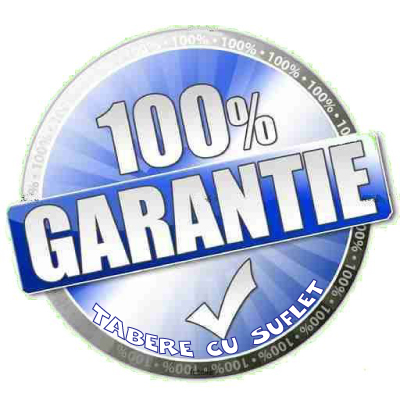

/ Proiecte WeCare / Garantie 100%
/ Proiecte WeCare / Garantie 100%

Proiectul Garantie 100% este un program WeCare al Asociatia Tabere cu Suflet pentru o Lume mai Buna.
Prin acest program ne propunem sa luam mai multe masuri prin care sa incercam sa atingem dezideratul de Satisfactie 100% din partea celor care participa la activitatile Tabere cu Suflet. Iata cateva exemple:
- In timpul epidemiei de coronavirus au fost mai multe tabere anulate din cauza starii de urgenta. Desi sumele de bani platite ca avans la furnizori nu au fost recuperate in totalitate, nu am tinut cont de acest lucru si am returnat banii primiti. Mai multe detalii
- In anul 2022, cand am experimentat o perioada de inflatie galopanta, am pastrat pretul activitatilor anuntate cu un an inainte, desi costurile crescusera si cu 100%. Mai multe detalii
- In cazul in care o tabara se anuleaza pentru ca nu s-au strans suficienti copii, avansul se returneaza integral si, in plus, prin acest program se ofera un premiu de consolare, cum ar fi, spre exemplu, un eVoucher pentru un Weekend Activ. Mai multe detalii
- La competitiile organizate de Asociatia Tabere cu Suflet, care strang anual sute si chiar mii de concurenti de toate varstele, adulti sau copii, Satisfactia 100% este unul dintre conceptele directoare. Mai multe detalii
Proiectul Garantie 100% a luat nastere in 2013, de la o idee a lui Loránd Soares-Szász. Initial era prevazuta returnarea sumelor platite clientilor nemultumiti, indiferent de motivul invocat, chiar si fara motiv (link). Din pacate nu toata lumea a apreciat valoarea morala a acestui proiect, iar unele persoane au preferat sa il vada doar ca pe o simpla sursa de venit. Ca urmare, in 2018 proiectul a fost reevaluat, astfel incat sa poata transmite mai bine Valorile Tabere cu Suflet!
"Posedam cu adevarat doar ceea ce oferim" - Seneca Mai multe citate